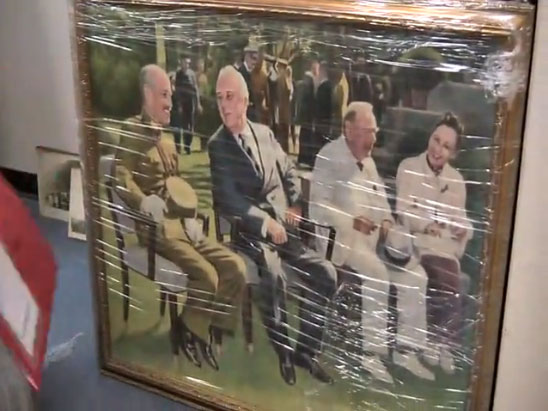

國民黨黨史館 第七次搬遷
錢震宇｜聯合報／綜合∣2012年6月17日
恆溫、恆濕，加上遠端監控、紅外線安全防護。這是國民黨黨史館比照國家檔案館規格，建置的文物安全防護。黨工打趣說，「這裡比主席辦公室還難進去」。
國民黨文傳會主委莊伯仲表示，黨史館近期從張榮發基金會大樓搬遷到台北市八德路中央黨部四樓，這是黨史資料第七次搬遷。黨史資料中，有許多是國民黨百年傳承的文化瑰寶，也是中華民國百年的真實記錄，包括有「國民黨舍利子」之稱的國父遺牙、國父革命時所穿的一雙皮鞋、就讀香港西醫書院的成績單，以及先總統蔣公留學日本「振武學校」時的數學筆記本等。
其它還有台灣本土畫家李梅樹畫的「開羅會議」、張大千的「慈湖圖」等真跡。一九一○年國父孫中山在美國舊金山「少年中國晨報社」使用的歐式掀背書桌，木頭材質依舊完好如初，依稀聞得到楓木香氣。
文物中的另一亮點，是國民黨中常會使用的簽到台。歷任總統除了陳水扁外，包括蔣中正、蔣經國、李登輝、馬英九等都曾以毛筆簽下名字。
莊伯仲表示，黨史館前身為黨史委員會，民國十九年五月一日成立於南京，之後因戰亂，遷移到重慶、南京，再到台灣的草屯「荔園」、陽明山「陽明書屋」等。
「史料搬遷的過程就像是一部中華民國史」。國民黨黨史館主任邵銘煌表示，這些史料是政府在一九四九年一月十五日在南京下關由軍艦載運到台灣來，雖然帶出來的只有總數的百分之五，卻是最精華、最核心的文物；新的黨史館連同閱覽室，溫濕度都有控制，「是歷來黨史館最理想的環境」。黨史館預計八月搬遷完畢，不對外開放，但珍貴文物將定期在黨中央一樓的黨史資料館公開展覽。